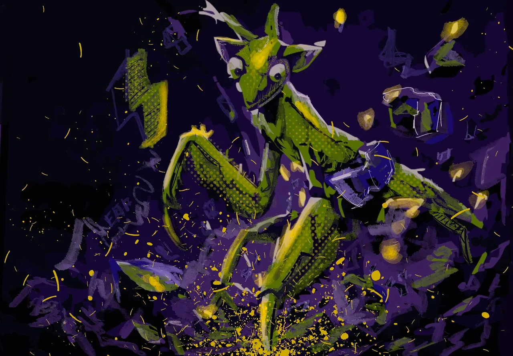
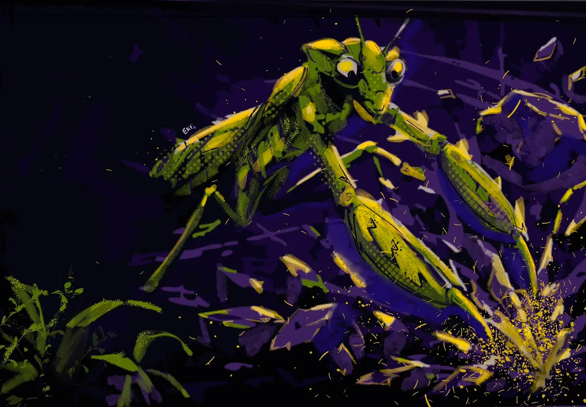
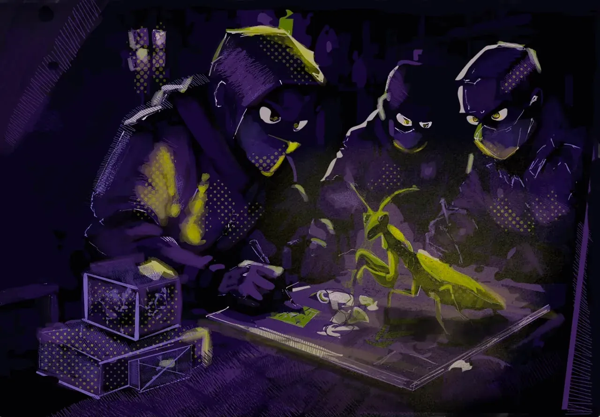
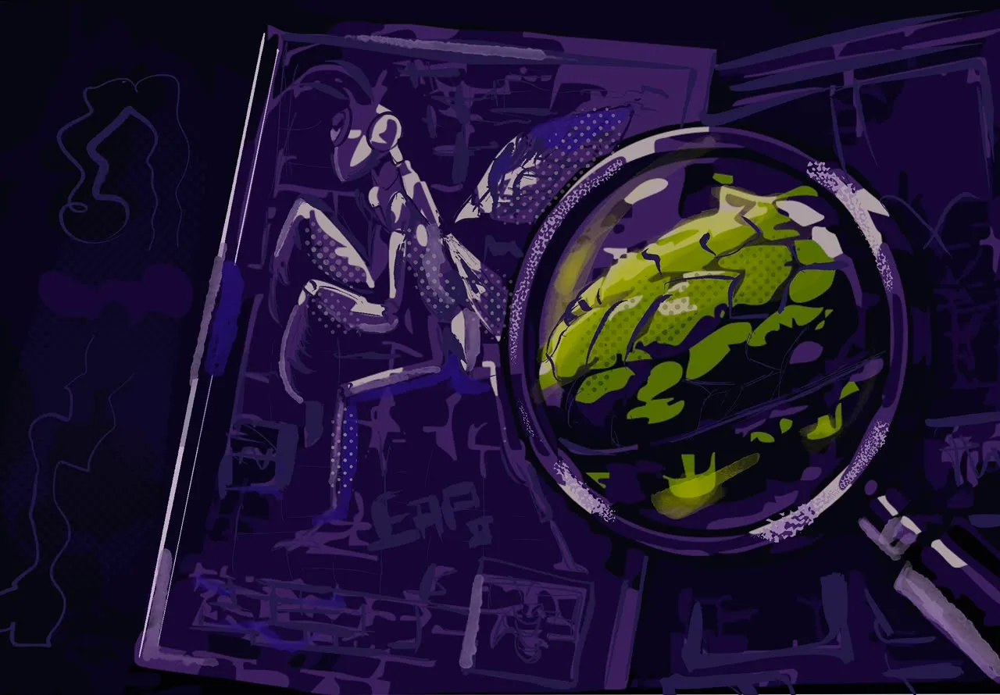
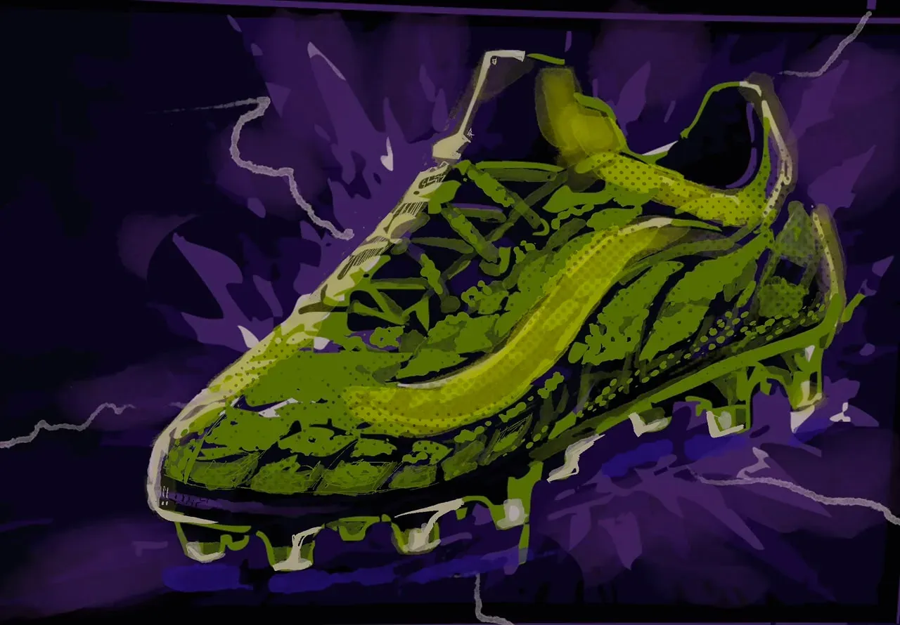
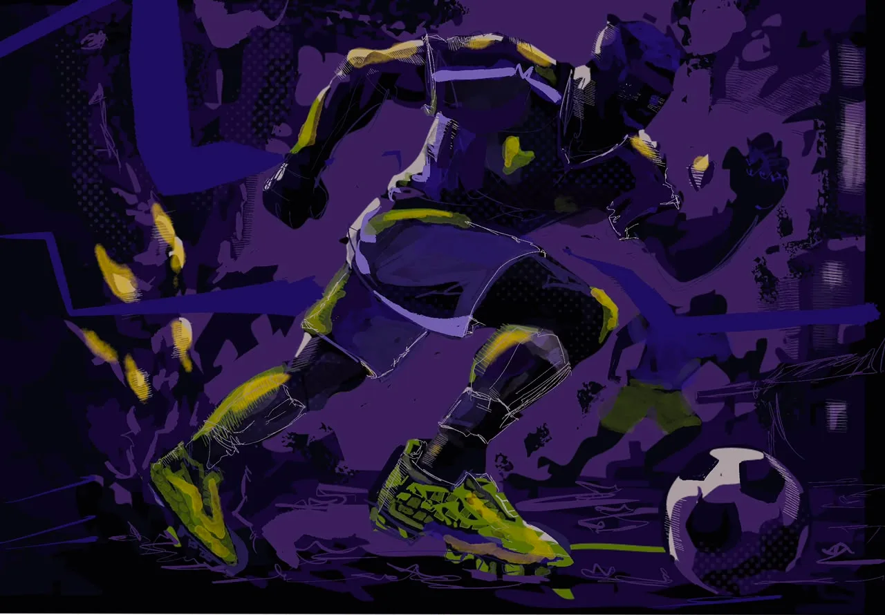
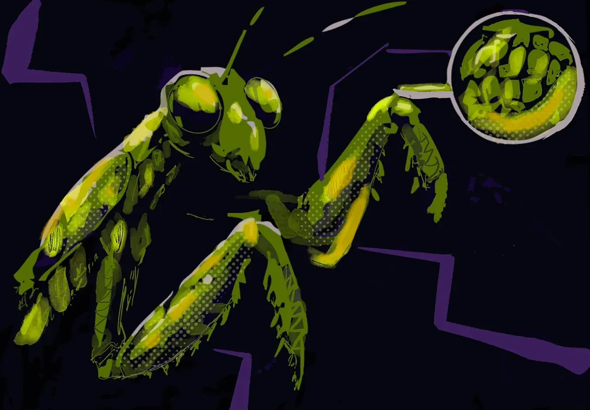
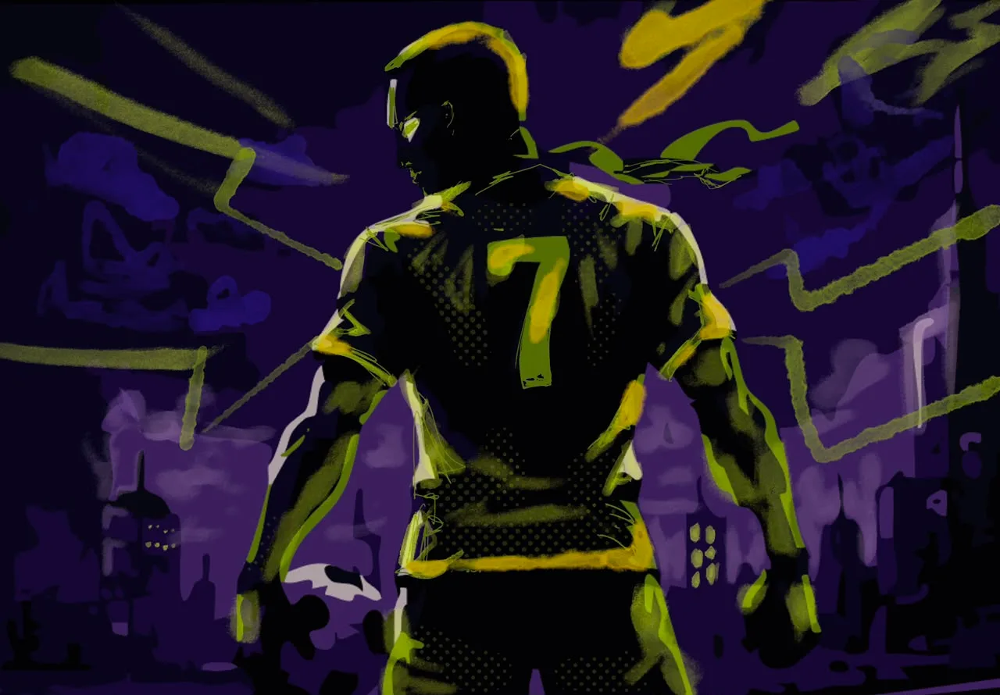
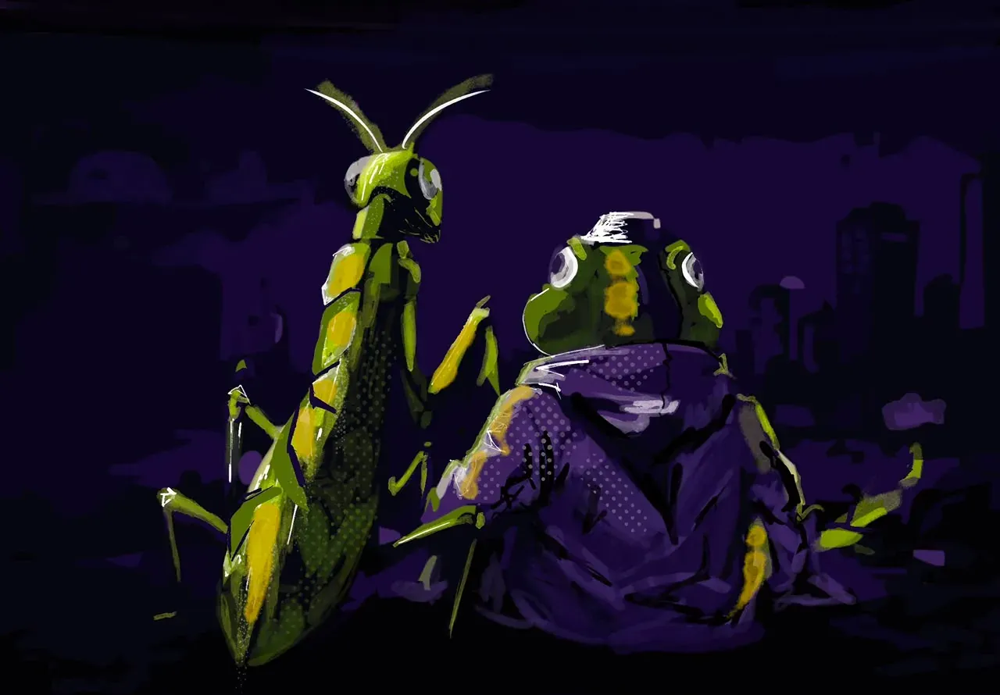

// ISSUE 001 — A KICKERSHOE COMIC
THE MANTIS ORIGIN
A motion comic. A footnote in folklore. A shoe born from a broken leg and a quiet vow.
OUT NOW
// THE FULL STORY
THE COMIC
-
01 // Long Ago

CAPTION — 01 Once, there was a MANTIS named alberto that lived in the grass with his best friend, a bill.
-
02 // DRILL

CAPTION — 02 As a young mantis, he was UNDESTRUCTABLE. No one could stop him. His body was fast, strong and protected by thick skin.
-
03 // THE BREAK

CAPTION — 03 With his agility, he could pierce through a rock like it was nothing. Nothing stood in his way. He was a legend in that city and his friend was proud.
-
04 // TAKEN

CAPTION — 04 Inspired by the mantis, many designers went deep into the wild to study his body...
-
05 // STUDIED

CAPTION — 05 ...his shape. his armor, his agility. They studied every detail. Every joint. Every layer
-
06 // THE SHOE

CAPTION — 06 From his design, they created something never seen before. A football boot inspired by the MANTIS.
-
07 // FIRST TOUCH

CAPTION — 07 A boot that PIERCES anything in its path... and gives COMPLETE AGILITY to the one who wears it.
-
08 // COPIED

CAPTION — 08 Sharp like a mantis. Tough like a shield. Fast like the wind. This is not just a boot. This is the MANTIS WEAVE.
-
09 // THE NUMBER

CAPTION — 09 Worn by those who dare to be different. Made for those who are unstoppable
-
10 // HOME

CAPTION — 10 From a mantis in the grass... to a legacy on the field. That's how legends are made. And this is just the BEGINNING
// FIELD NOTES — RESTRICTED
LORE
ENTRY 01WHO IS THE MANTIS?+
Born in the wet grass east of the river. Smaller than his peers. Quieter. He watched football from behind a leaf for nine seasons before he ever touched a ball. He is, by all accounts, still alive.
ENTRY 02THE BOOT'S FIRST MATCH+
A back-alley five-a-side, no name on the sheet. Player wore them straight from a paper bag. Scored four. Vanished at half-time. The bag was never returned.
ENTRY 03WHY GREEN?+
Because invisibility is a kind of armour. Because the grass owes him nothing and everything. Because gold without green is just a bruise.
ENTRY 04THE GOLD STITCHING+
Filament is real. We tested it. We don't know where he gets it. He won't say.